Template Guide
Apache Roller Weblogger
Version 4.0 (DRAFT)
Table of Contents
1 Overview 4
1.1 Copyright and trademark information 4
1.2 Feedback 4
1.3 Acknowledgments 4
1.4 Modifications and Updates 4
1 Introduction 5
2 The Roller template system 6
2.1 Page templates 6
2.2 The Velocity template language 6
3 Editing and creating page templates 8
3.1 The Weblog template 8
3.2 The _day template 10
3.3 Customizing your theme 11
3.4 Editing and creating page templates 12
4 Using models, objects and macros 14
4.1 Accessing data via models and objects 14
4.1.1 Accessing object properties 14
4.1.2 Calling object methods 14
4.2 Calling macros 14
4.3 A word about pagers 15
5 Model Object Reference 16
5.1 $config 16
5.1.1 $config Properties 16
5.1.2 $config Methods 16
5.2 $model 17
5.2.1 $model Properties 17
5.2.2 $model Search Properties 18
5.2.3 $model methods 18
5.3 $url 19
5.4 $utils 21
6 Data Object Reference 22
6.1 Bookmark 22
6.2 BookmarkFolder 22
6.3 Comment 23
6.4 PageTemplate 23
6.5 Referrer 23
6.6 TagStat 24
6.7 User 24
6.8 Weblog 24
6.9 WeblogCategory 25
6.10 WeblogEntry 25
6.11 WeblogEntryTag 26
6.12 WeblogEntryAttribute 27
7 Macro Reference 28
7.1 Entry macros 28
7.2 Comment macros 29
7.3 List macros 30
7.4 Menu macros 32
7.5 Search macros 32
7.6 Misc. macros 33
7.7 Displaying a Tag Cloud 37
8 Additional models 38
8.1 $site 38
8.1.1 $site Objects 38
8.1.2 $site Methods 38
8.2 $planet 39
8.2.1 Configuring the planet model 39
8.2.2 $planet Objects 40
8.2.3 $planet Methods 41
This document is a Template Guide to the Apache Roller Weblogger, the Java-based and open source weblog server that is produced by the Apache Roller project of the Apache Software Foundation.
The contents of this document are subject to the terms of the Apache Software License.
All trademarks within this document belong to legitimate owners.
Please direct any comments or suggestions about this document to: dev@roller.apache.org
The general format of this document was based on the documentation template used by OpenOffice.org.
|
Date |
Description of Change |
|---|---|
|
July 31, 2007 |
New format/layout |
If you know a little about HTML and CSS, then you'll find that it's easy to customize the appearance, layout and content of your Roller-based weblog. You can change the appearance of any of your weblog's pages and add as many new pages as you want. Any Roller user can do it through Roller's web-based interface and it's all done with Roller's simple and easy-to-use template language. In this guide, we'll tell you how. We'll start by explaining how Roller's weblog template system works then we'll provide a reference to the objects and macros that you can use in your templates.
NOTE: If you have only AUTHOR or LIMITED permissions within a weblog then you won't have access to the Preferences->Theme or Preferences->Templates pages and you won't be able to change or customize your theme. You need to have ADMIN permission within a weblog to be able to do the things described in this guide.
NOTE: It is possible for a Roller site administrator to disable theme customization. So if you do have ADMIN permission in your weblog and you still don't see the Preferences->Templates page, perhaps your Roller site does not allow customization.
Each Roller weblog is defined by a set of page templates, which you can edit to customize the content, layout and appearance of your weblog.
When you create a new Roller weblog you must pick a theme to define the new weblog's appearance and layout. A theme is just a small set of templates, where each template contains HTML code, template language expressions and macros. What's a template? A template for an HTML web page is simply an HTML web page with some Velocity code embedded inside. For example, this is a valid Roller template, with one Velocity expression:
<html>
<body>
My blog is named $model.weblog.name
</body>
</html>
The string "$model.weblog.name" is a template language expression and when Roller displays the template, that expression will be replaced with the name of the weblog.
Note that $model is something special. Roller makes a set of objects, known as models, available to page templates. In the example above, we see only the $model object, but here are others. You'll learn more about models in Section 4 and Section 5 provides a complete reference.
The simple template language that we use inside Roller page templates is called Velocity. It's designed to be simple and easy for even non-programmers, but it's also a simple programming language. You can set variables, use if-else conditional logic and create loops.
For example, this Roller page template will list the categories available in your weblog except for the one named Music:
<html>
<body>
My blog is named $model.weblog.name. These are my categories:<br>
#foreach ($cat in $model.weblog.categories)
#if ($cat.name != "Music")
$cat.name<br>
#end
#end
</body>
</html>
Velocity also supports the concepts of macros. A macro is essentially a Velocity method call. We use them in Roller to generate HTML. For example, as illustrated below, to display a bookmark folder you first retrieve if from the weblog and second pass it to the #showBookmarkLinksList() macro to display it as an HTML <ul> list.
<html>
<body>
<h2>Blogroll</h2>
#set($rootFolder = $model.weblog.getBookmarkFolder("/"))
#showBookmarkLinksList($rootFolder false false)
</body>
</html>
You'll learn more about macros in Section 4 and Section 7 provides a complete reference to the standard Roller macros. If you want more information on Velocity. the Here are links to the User and Reference guides:
Now that we've covered the basic concepts of page templates and the Velocity template language, let's dig into the details of editing templates.
After you've used Roller Preferences->Themes page to customize your weblog theme, you can edit and create page templates through the Preferences->Templates page. We'll show you how to do that, but first you need to understand how the required pages, found in every theme, work together to display a weblog.
Every theme is different, but all themes must have two required pages -- pages that you cannot rename or delete. These are the Weblog template, which defines the main page of your blog, and the _day template, which defines how each day's worth of blog entries is displayed on your main page. Some themes also have a required page named _css which defines the CSS style code used by the weblog.
First, let's look at a simple Weblog template.
Below is a simple Weblog page that displays all of the data that weblog typically contains including recent entries with paging to past entries, category link, feed links, a calendar and feed auto-discovery. Check the annotations for more detail.
Listing 1: a typical Weblog template
<!DOCTYPE html PUBLIC "-//W3C//DTD HTML 4.01 Transitional//EN">
<html><head>
<title>$model.weblog.name : $model.weblogPage.name</title> #1
#showAutodiscoveryLinks($model.weblog) #2
<style type="text/css">#includeTemplate($model.weblog "_css")</style> #3
</head>
<body>
<table border="0" align="center" width="95%">
<tr>
<td class="entries" width="80%" valign="top">
<h1>$model.weblog.name</h1> #4
<p class="descrip">$model.weblog.description</p>
#set($rootCategory = $model.weblog.getWeblogCategory("nil")) #5
#showWeblogCategoryLinksList($rootCategory false false)<br>
#set($pager = $model.getWeblogEntriesPager()) #6
<div class="next-previous">
#if ($model.results) #7
#showWeblogSearchAgainForm($model.weblog)
#showNextPrevSearchControl($pager)
#else
#showNextPrevEntriesControl($pager) #8
#end
</div>
#showWeblogEntriesPager($pager) #9
#if ($model.permalink) #10
#showWeblogEntryComments($entry)
#showWeblogEntryCommentForm($entry)
#end
</td>
<td width="20%" valign="top">
<h2>Calendar</h2>
#showWeblogEntryCalendar($model.weblog "nil") #11
<h2>Feeds</h2>
#showAtomFeedsList($model.weblog) #12
<h2>Search</h2>
#showWeblogSearchForm($model.weblog false) #13
<h2>Links</h2>
#set($rootFolder = $model.weblog.getBookmarkFolder("/")) #14
#showBookmarkLinksList($rootFolder false false)
<h2>Navigation</h2>
#showPageMenu($model.weblog) #15
#showAuthorMenu(true) #16
<h2>Referrers</h2>
#set($refs = $model.weblog.getTodaysReferrers()) #17
#showReferrersList($refs 30 20)
</td>
</tr>
</table>
</body>
</html>
The above template includes a good mix of Velocity expressions and statements. There's a lot going on, so let's explain it in detail. Here's the point-by-point breakdown.
HTML title
For the HTML title we use the weblog's name,
a colon and the name of the page template that is currently being
displayed.
Auto-discovery links
The #showAutodiscoveryLinks()
macro adds the HTML <link>
elements required for RSS and Atom feed auto-discovery as well as
RSD for weblog clients.
Include CSS styles
Here we use the include the theme's
_css template directly in the page, right inside a pair of
<style>
tags.
Display a page title
Here we use the weblog's name again
in an <h1> title.
Category links list
Display a list of weblog category
links.
Get entries pager
Get the entries pager object so we can
display entries and a paging control.
Show search results control?
Show search results pager
control if search in progress
Else . . .
Show normal entries pager control.
Show entries
Show current page's worth of entries (or
search results). Calls on _day template to do the display
of each day's worth of entries.
Show comments?
If we're on a permalink page, then show
comments and comments form
Show the calendar
Show the standard weblog calendar.
Show feed links
Show links to all available Atom entry
feeds, one per category.
Search form
Show the weblog search form, false indicates
no category chooser.
Display blogroll
Display contents of the root bookmark
folder.
Show page menu
Display navigation bar of pages available
in weblog.
Show author menu
Display author's menu, only visible to
authorized users.
Display today's referrers
Display today's referrer URL
with hit counts.
Note in point #9 that the display of the weblog entries is controlled by another template, the _day template. So next let's take a look at that _day template.
A theme's _day template is responsible for displaying one day's worth of weblog entries. Here's a typical _day template, one that corresponds to the above Weblog template.
Listing 2: a typical _day template
<div class="dayBox">
<div class="dayTitle">
$utils.formatDate($day, "EEEE MMM dd, yyyy") #1
</div>
#foreach($entry in $entries) #2
<div class="entryBox">
<p class="entryTitle">$entry.title</p> #3
<p class="entryContent">
#if($model.permalink) #4
$entry.displayContent
#else
$entry.displayContent($url.entry($entry.anchor))
#end
</p>
<p class="entryInfo">
Posted at
<a href="$url.entry($entry.anchor)"> #5
$utils.formatDate($entry.pubTime, "hh:mma MMM dd, yyyy")</a>
by $entry.creator.fullName in #6
<span class="category">$entry.category.name</span> | #7
#if ($utils.isUserAuthorizedToAuthor($entry.website)) #8
<a href="$url.editEntry($entry.anchor)">Edit</a> |
#end
#if($entry.commentsStillAllowed || $entry.commentCount > 0) #9
#set($link = "$url.comments($entry.anchor)" )
<a href="$link" class="commentsLink">
Comments[$entry.commentCount]</a>
#end
</p>
</div>
#end
</div>
And here's a point-by-point description of the template language expressions and statements found in the above day template:
Display day header.
For the day
header, we display the current date in a long format.
Loop through day's entries.
Here we
use a $foreach loop to iterate through the $entries collection
Display entry title.
Display the
entry title in a <div> so that it can be easily styled.
Display entry content or summary.
If
we're on a permalink page, show the entry's content. Otherwise, show
the summary if a summary is available.
Display entry permalink.
Display
permanent link to the entry.
Display entry author's name.
Display
the name of the author of the entry.
Display entry category.
Display the
name of the category associated with the entry.
Show edit link.
If user is
authorized, display link to edit the entry.
Show comments link.
If comments are
available or are still allowed, display link to entry comments.
Now you've seen the required templates and you've seen most of the commonly used macros in action, let's discuss the mechanics of customizing your theme.
When you start a Roller weblog and you pick a theme, your weblog uses a shared copy of that theme. The page templates that define your theme are shared by all of the other users who have also picked that theme. Using a shared theme is nice because, when your Roller site administrator makes fixes and improvements to that shared theme, then you'll get those automatically. But you can't customize a shared theme. Before you can customize your theme, you've got to get your own copy of the theme's page templates like so:

Go
to the Preferences->Theme page.
Login to Roller and go to
your weblog's Preferences->Themes page. Shown below.
Pick and save the theme you'd
like to customize.
If you want to customize your weblog's
current theme, then you can skip this step. If you have't decided
which theme to customize, then use the preview combo-box to pick the
theme that you'd like to use as your starting point. Once you've
picked your theme, click the Save button to save it as your current
theme.
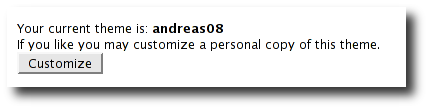
Click
the Customize button.
Click the Customize button to customize
your theme. When you do this, copies of the themes page templates
will be copied into your weblog so you can edit them.
Customize your theme by
editing and creating page templates.
Go to the
Preferences->Templates page, edit your page templates and add new
ones as needed – as described in the next section.
And if you get tired of your customized theme, just use the Preferences->Theme page to switch back to a shared theme – or pick another one to customize. Now let's discuss editing and creating templates.
Once you've got the page templates copied into your weblog, you can do just about anything you want to your theme. You can use the Preferences->Templates page, shown below, to create a new page, delete a page or choose a page to edit.
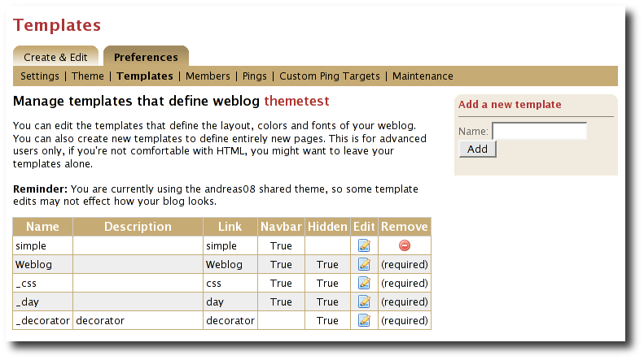
Now might be a good time to describe the page template properties since you can see them in the table above. The properties are name, description, link, navbar and hidden. Let's explain each:
Name: Each template has a name, which you can display in your templates. You can also use the #includeTemplate() macro to include the contents of one page in another, by referring to the template by name.
Description: You can enter an option description for each page for display or just as a reminder to yourself as to the purpose of the page.
Link: Each page template has a link property, which is used to form the URL for the page. For example, if the page's name is “simple” then the page will be available at the URL “/page/simple” within the weblog.
Navbar: This is a flag that indicates whether the page is to be shown in the weblog navigation bar that is produced by the #showPageMenu() macro.
Hidden: This is a flag that indicates that a page is hidden and not possible to access via URL.
For new templates that you add, you'll be able to edit all of those properties using the Preferences->Template->Edit Template page (shown below).

But the rules for required pages are different. The weblog pages named Weblog, _day and _css are considered to be required pages. You can change the template code for those pages but you cannot edit the name, link or any other properties.
Now that you know how to edit and create page templates, let's discuss how to use the models, objects and macros that Roller makes available to template authors.
Roller makes weblog data available to page templates in the form of models and data objects and makes it easy for you to generate the HTML for your weblog by providing macros. Let's explain these new terms.
Model objects: Model objects provide access to data from Roller and specifically from your Roller weblog. A model object returns data objects or collections or data objects. In Section 6, we'll describe each model, it's properties and methods.
Data objects: Data objects each represent an item of data within your Roller weblog, for example there is a Weblog object that represents your weblog, WeblogEntry objects which represent individual weblog entries and Bookmark objects that represent items in your blogroll. In Section 7, we'll describe each data object, it's properties and methods.
Macros. A macro is Velocity routine that generates HTML based on a data object or a collection of data objects. In Section 8 we'll describe each of Roller's build-in macros.
Let's discuss how to access data via models and data objects.
Models and data objects are objects and there are two ways to access data from objects. One way is to access an objects properties. Another is to call the object's methods. Let's talk about these two techniques.
To access an objects properties, you use a simple dot-notation. For example, if you want to display the Roller version number property of the $config model object, you do something like this in your page:
<p>$config.rollerVersion</p>
Or, if you'd like to save the Roller version number in a variable named $version, you'd do this:
#set( $version = $config.rollerVersion )
And some properties are themselves objects, which in turn have their own properties and methods. For example, you can get the Weblog object from the $model object and from the weblog object you can display the weblog's name and description like so:
<p>$model.weblog.name</a>
<p>$model.weblog.description</a>
Another way to access an object's data is to call an objects's methods. Methods are different from properties because they require parameters. You use the same simple dot-notation, but you must end the expression with a list of parameters in parentheses. For example, if you'd like to display an image from within your theme, you can use the $url model like so:
<img='$url.themeResource(“basic”, “background.gif”)'></a>
Argument one is the name of the theme and argument two is the name of a file that exists in the theme's directory. Note that a comma is used to separate the arguments.
In page templates, you get data from objects and you use template code to display that data as HTML. To help you along, Roller includes some macros which can be used to generate commonly used HTML constructs on your weblog. There are macros for displaying your weblog entries, displaying your blogroll and displaying a comment form.
Calling a macro is a little different from calling a macro. A macro call starts with a # pound-sign, followed by the macro name and the macro parameters enclosed in parentheses. For example, you call the weblog calendar macro like so:
#showWeblogEntryCalendar($model.weblog "nil")
Argument one is the weblog for the calendar and argument two is the category, where “nil” indicates that no category is specified. Note that the arguments for a macro are separated by a space and NOT a comma as was the case for methods.
There are many cases in a weblog when we want to display a large collection of values and we want that collection to be page-able – that is, we want a Next link to go to the next page of results and possibly a Previous link to go to the previous page. So in Roller, we've introduced the concept of a pager. A pager is a special type of object that makes it easy to display a page-able collection of items within a page template. You can see a pager in action in Listing 1 above.
You probably won't need to use a pager object directly, since the macros do it for you. But if you do, here's what a pager looks like:
$pager.homeLink – URL of the first page of results
$pager.homeName – Name to be displayed for that URL
$pager.nextLink – URL of the next page of results
$pager.nextName – Name to be displayed for that URL
$pager.prevLink – URL of the previous page of results
$pager.prevName – Name to be displayed for that URL
$pager.items – Collection of data objects; the current page of results
There is also a WeblogEntryPager interface that provides some extra methods for next-collection paging. The collection methods exist because often, with weblog entries, we are paging through the entries that exist within one time period, a month for example. In that case. the nextLink point to the next page of results within that month and the nextCollectionLink points to the next months entries.
$pager.homeLink – URL of the first page of results
$pager.homeName – Name to be displayed for that URL
$pager.nextLink – URL of the next page of results
$pager.nextName – Name to be displayed for that URL
$pager.prevLink – URL of the previous page of results
$pager.prevName – Name to be displayed for that URL
$pager.nextCollectionLink – URL of next collection in sequence
$pager.nextCollectionName – Name to be displayed for that URL
$pager.prevCollectionLink – URL of previous collection in sequence
$pager.prevCollectionName – Name to be displayed for that URL
$pager.items – Collection of data objects; the current page of results
This section covers the standard model objects available in all page templates:
$config – provides access to the Roller site configuration parameters
$model – provides access to data for one specific weblog
$url – for creating Roller URLs and URLs within one specific weblog
$utils – utility methods needed within page templates
For each model, we'll cover properties and methods.
The $config model provides access to the Roller configuration data that you'll need in your weblog.
|
Property Name |
Type |
Description |
|
$config.commentAutoFormat |
Boolean |
True if comments should be formatted with added line feeds. |
|
$config.commentEmailNotify |
Boolean |
True if notification of new comments via email is enabled. |
|
$config.commentEscapeHtml |
Boolean |
True if all HTML will be stripped of comments before display. |
|
$config.feedMaxSize |
Maximum number of items displayed in RSS and Atom feeds. |
|
|
$config.feedStyle |
Boolean |
True if feeds are displayed with user-friendly formatting (via XSL stylesheet). |
|
$config.rollerVersion |
String |
Version number of Roller build. |
|
$config.registrationEnabled |
Boolean |
True if new user registration is enabled. |
|
$config.registrationURL |
Boolean |
URL of new user registration site (if not using standard Roller registration). |
|
$config.siteDescription |
String |
Description of this Roller site. |
|
$config.siteEmail |
String |
Email address of this Roller site's administrator. |
|
$config.siteName |
String |
Name of this Roller site. |
|
$config.siteShortName |
Short name of this Roller site. |
The $config model also provides a set of methods for accessing properties by name. Generally, you should be able to get the configuration data you need from the properties above. You shouldn't need to call these methods, but just so you know:
boolean getBooleanProperty(String
propertyName)
Returns the named runtime property as a booean.
String getProperty(String
propertyName)
Returns the named runtime property as a String.
int getIntProperty(String
propertyName)
Returns the named runtime property as an
integer.
The $model object provides you with access to all of the data objects that make up your weblog. You can get a pager object to access your weblog entries, the weblog entry referenced by the request, the category object referenced by the request and the weblog itself.
The diagram below show the objects you can get from the $model and the collections of objects that you can get from those. See Section 6 for a complete reference to the data objects and their properties.
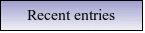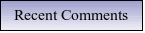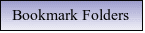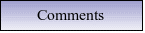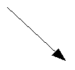 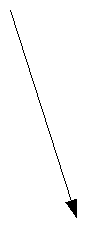
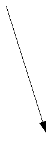 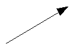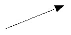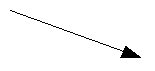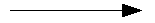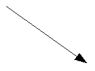
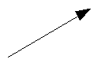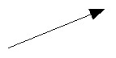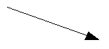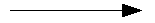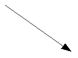
Now let's the details of the $model object, starting with properties.
|
Name |
Type |
Description |
|
$model.commentForm |
CommentForm |
On a comment-page, this object will be populated with the comment form values. Values available are $model.commentForm.name, $model.commentForm.url and $model.commenForm.content. |
|
$model.locale |
String |
Name of locale if one is specified in the URL. |
|
$model.weblog |
Weblog |
Current weblog being displayed. |
|
$model.weblogCategory |
Weblog category specified by URL or null if not specified. |
|
|
$model.weblogEntry |
WeblogEntry |
Weblog entry object specified by URL or null if none specified. |
|
$model.weblogEntriesPager |
Pager |
Weblog entry pager for paging over entries specified by URL. |
|
$model.weblogPage |
PageTemplate |
Weblog page object specified or implied by URL. |
|
$model.permalink |
Boolean |
True if URL specifies one specific Weblog Entry permalink. |
|
$model.searchResults |
Boolean |
True if displaying search results. |
|
$model.tags |
List of strings |
List of tags specified by request. |
If the URL indicates a search, then the pager returned by $model.weblogEntriesPager will return entries from the search and some additional properties will be available on the $model object:
|
Name |
Type |
Description |
|
$model.categories |
List of Strings |
List of category names available in search. |
|
$model.hits |
Integer |
Total number of hits found. |
|
$model.limit |
Integer |
Max. number of search results displayed per page. |
|
$model.offset |
Integer |
Offset into current page of search results. |
|
$model.weblogSpecificSearch |
Boolean |
True if search is specific to one weblog. |
The $model object also provides a couple of methods:
Pager getWeblogEntriesPager(String
catPath)
Returns a pager that contains only entries from the
specified category.
String getRequestParameter(String
paramName)
Returns a specific request parameter from the URL.
To ensure that your URLs are formed correctly, you should use the $url model to form all URLs that point to the Roller site or to your weblog. Every possible type of Roller URL is supported:
|
Name |
Type |
Description |
|
$url.absoluteSite |
String |
Absolute URL of Roller site. |
|
$url.category(String catPath) |
String |
URL for one categor within weblog. |
|
$url.category(String catPath, int pageNum) |
String |
URL for one categor within weblog, w/page. |
|
$url.commentAuthenticator |
String |
URL of comment authenticator. |
|
$url.comment(String anchor, String timeStamp) |
String |
URL of comment for entry specified by anchor. |
|
$url.comments(String anchor) |
String |
URL of comments for entry specified by anchor. |
|
$url.createEntry |
String |
URL for new-entry page in Roller UI. |
|
$url.editEntry(String anchor) |
String |
URL for edit-single-entry page in Roller UI. |
|
$url.date(String dateString) |
String |
URL for one specific 6 or 8 character date. |
|
$url.date(String dateString, int pageNum) |
String |
URL for one specific 6 or 8 character date, w/page. |
|
$url.editSettings |
String |
URL for edit-weblog-settings page in Roller UI. |
|
$url.entry(String anchor) |
String |
URL for entry specified by anchor. |
|
$url.feed.entries.atom |
String |
URL of entries feed (Atom). |
|
$url.feed.entries.rss |
String |
URL of entries feed (RSS). |
|
$url.feed.comments.atom |
String |
URL of comments feed (Atom). |
|
$url.feed.comments.rss |
String |
URL of comments feed (RSS). |
|
$url.home |
String |
URL of weblog. |
|
$url.home(String locale) |
String |
URL to access weblog in one specific language |
|
$url.home(String locale, int pageNum) |
String |
URL to access weblog in one specific language, with paging |
|
$url.login |
String |
URL of login page. |
|
$url.logout |
String |
URL of logout page. |
|
$url.rsd |
String |
URL of Really Simple Discovery (RSD) service. |
|
$url.page(String pageLink) |
String |
URL of page specified by pageLink. |
|
$url.page(String pageLink, String dateString,
|
String |
URL of page specified by pageLink, dateString, catPath and pageNum. |
|
$url.search |
String |
URL of search |
|
$url.search(String query, |
String |
URL of search for specific search string, catPath and pageNum. |
|
$url.site |
String |
Relative URL of Roller site. |
|
$url.resource(String filePath) |
String |
URL of uploaded file resource in weblog. |
|
$url.themeResource(String theme, String file) |
String |
URL of a resource within a Roller theme. |
|
$url.themeResource( |
String |
Absolute URL of a resource within a Roller theme. |
|
$url.trackback(String anchor) |
String |
Trackback URL for entry specified by anchor. |
The $utils object provides all of the string manipulation methods you'll ever need for your weblog, including methods for formatting dates, escapeing HTML, encoding URLs and even removing HTML entirely. Here's a comprehensive list of the $utils methods:
String
addNowFollow(String s)
Adds the nofollow attribute to any
HTML links found within the string.
String
autoformat(String s)
Converts any line-breaks in the string
with <br> tags.
String
decode(String s)
Decodes a string that has been URL encoded.
String
encode(String s)
Applies URL encoding to a string.
String
escapeHTML(String s)
Escapes any non-HTML characters found in
the string.
String
escapeXML(String s)
Escapes any non-XML compatible characters
found in the string.
String
formatDate(Date date, String fmt)
Formats a date object
according to the format specified (see java.text.SimpleDateFormat)
String
formatIso8601Date(Date date)
Formats a date object using
ISO-8601 date formatting.
String
formatRfc822Date(Data date)
Formats a date object using
RFC-822 date formatting.
boolean
isEmpty(Object o)
Returns true if the object is null or if it
is an empty string.
boolean
IsNotEmpty(Object o)
Returns true of the object is not null
or is a non-empty string.
String
removeHTML(String s)
Remove all HTML markup from a string.
String
replace(String str, String target, String replacement)
In the
string str, replace the target string with the replacement string.
String
toBase64(String s)
Convert a string to Base64 encoding.
String
transformToHTMLSubset(String s)
Transform any HTML in the
string to a safe HTML subset.
String
truncate(String str, int lower, int upper, String append)
Truncate
a string str so that it is between lower and upper characters in
length and add the append string.
String
unescapeHTML(String s)
Unscape a string that has been HTML
escaped.
String
unescapeXML(String s)
Unescape a string that has been XML
escaped.
That's it for the $url model and for models in general. Let's move on to the data objects.
In this section we'll list each of the properties and methods of the Roller data objects. These are:
Bookmark: A single link within a weblog's web bookmark collection, exists with a Folder
Bookmark Folder: A Folder containing Bookmarks.
Comment: A Comment associated with a specific Weblog Entry
Page Template: An individual page template within a Weblog.
Referrer: A Referrer represents an external site that links to the Weblog
User: Represents a single user within the Roller site.
Weblog: a Weblog containing Weblog Entries, Page Templates, Bookmarks, etc.
Weblog Entry: an individual Weblog Entry
Weblog Entry Attrbute: a name value pair-associated with a Weblog Entry
Weblog Category: A category within a weblog, categories in Roller are hierarchical
|
Name |
Type |
Description |
|
$bookmark.description |
String |
Description of the bookmark |
|
$bookmark.feedUrl |
String |
URL of the newsfeed associated with the bookmark |
|
$bookmark.folder |
BookmarkFolder |
Parent folder of the bookmark |
|
$bookmark.image |
String |
URL of image to be displayed for bookmark |
|
$bookmark.name |
String |
Name of the bookmark |
|
$bookmark.url |
String |
URL of the bookmark |
|
Name |
Type |
Description |
|
$folder.bookmarks |
Bookmarks contained in folder. |
|
|
$folder.description |
String |
Description of folder |
|
$folder.folders |
List of BookmarkFolders |
Folders contained in folder |
|
$folder.inUse |
Boolean |
True if folder contains other bookmarks or folders. |
|
$folder.name |
String |
Name of folder |
|
$folder.parent |
BookmarkFolder |
Parent of folder |
|
$folder.path |
String |
Path in the BookmarkFolder hierarchy |
|
$folder.website |
Weblog |
Weblog in which folder is contained |
|
Name |
Type |
Description |
|
$comment.approved |
True if comment has been approved for display |
|
|
$comment.content |
String |
Content of the comment |
|
$comment.email |
String |
Email address of the commenter |
|
$comment.name |
String |
Name of the commenter |
|
$comment.notify |
Boolean |
True if commenter choose the 'please notify me via email' option |
|
$comment.pending |
Boolean |
True if comment is waiting for approval |
|
$comment.postTime |
Date |
Time that comment was created |
|
$comment.remoteHost |
String |
Host name or IP address of commenter |
|
$comment.spam |
Boolean |
True if comment is marked as spam |
|
$comment.url |
String |
URL of the commenter |
|
$comment.weblogEntry |
WeblogEntry |
Weblog entry with which comment is associated |
|
Name |
Type |
Description |
|
$page.contents |
The content of the page template, typically HTML and Velocity code |
|
|
$page.description |
String |
Description of the page |
|
$page.lastModified |
Date |
Date that page properties or content was last modified |
|
$page.link |
String |
String used to form URL to page |
|
$page.name |
String |
Name of the page |
|
$page.navbar |
String |
True if page should be included in page navigation menu |
|
$page.hidden |
String |
True if page is NOT callable by URL |
|
Name |
Type |
Description |
|
$referrer.dateString |
String |
Eight character date string implied by referred to URL |
|
$referrer.dayHits |
Integer |
Number of hits counted against this referrer today |
|
$referrer.displayUrl |
String |
URL to be displayed for this referrer |
|
$referrer.excerpt |
String |
Except extracted from referring site by linkback extractor |
|
$referrer.refererUrl |
String |
URL that refers to your weblog |
|
$referrer.refererPermalink |
String |
Permalink URL referrered by by the referrer |
|
$referrer.title |
String |
Title extracted from referring site by linkback extractor |
|
$referrer.totalHits |
Integer |
Total number of hits counted against this referrer |
|
$referrer.visible |
Boolean |
True if referrer should be displayed |
|
$referrer.weblogEntry |
WeblogEntry |
Weblog entry referenced by this referrer |
|
$referrer.website |
Weblog |
Weblog referred to by this referrer |
|
Name |
Type |
Description |
|
$tagStat.name |
String |
Name of tag |
|
$tagStat.count |
Integer |
Number of usages of tag within weblog or site (depending on context) |
|
$tagStat.intensity |
Integer |
Relative intensity rating of tag (values 1 through 5) |
|
Name |
Type |
Description |
|
$user.dateCreated |
Date that user was created |
|
|
$user.emailAddress |
String |
User's email address |
|
$user.fullName |
String |
Users full name |
|
$user.locale |
String |
User's locale |
|
$user.timeZone |
String |
User's timezone |
|
$user.userName |
String |
User's username |
|
Name |
Type |
Description |
|
$weblog.active |
True if weblog is considered active |
|
|
$weblog.allowComments |
True if comments are allowed in weblog |
|
|
$weblog.commentCount |
Long |
Total number of comments of approved in weblog |
|
$weblog.creator |
User |
User who created this weblog |
|
$weblog.dateCreated |
Date |
Date weblog was created |
|
$weblog.description |
String |
Description of weblog |
|
$weblog.emailAddress |
String |
Email address of weblog's managing editor |
|
$weblog.emailComments |
True if email notification of comments is enabled |
|
|
$weblog.emailFromAddress |
String |
Email address for from-address of notifications |
|
$weblog.enableBloggerApi |
True if remote blogging API is enabled |
|
|
$weblog.enabled |
True if weblog is enabled |
|
|
$weblog.entryCount |
Long |
Total number of entries in weblog |
|
$weblog.entryDisplayCount |
Integer |
Default number of entries to display in pagers |
|
$weblog.handle |
String |
Simple string handle that uniquely identifies weblog |
|
$weblog.lastModified |
Date |
Timestamp of last modification to weblog |
|
$weblog.locale |
String |
Default locale used by weblog |
|
$weblog.moderateComments |
True |
True if comment moderation is enabled in weblog |
|
$weblog.name |
String |
Name of the weblog |
|
$weblog.pages |
List of PageTemplates |
Page templates of weblog |
|
$weblog.popularTags( |
List of TagStat objects |
Popular tags in past sinceDays number of days. Returns up to length number of objects. |
|
$weblog.timeZone |
String |
Timezone of the weblog |
|
$weblog.todaysHits |
Integer |
Number of hits counted today |
|
$weblog.weblogCategories |
List of WeblogCategories |
Top-level categories of weblog |
Weblog Methods
WeblogEntry
getWeblogEntry(String anchor)
Get an individual weblog entry
by the entry's anchor, which is unique within a weblog.
List
getRecentWeblogEntries(String cat, int max)
Get most recent
WeblogEntries in the weblog up to the number max. You can specify a
category name if you'd liike only entries from one category (or
“nil” for all categories).
List
getRecentComments(int max)
Get most recent Comments in the
weblog up to the limit max.
List
getWeblogCategories(String catpath)
Get WeblogCategories in
folder found at the specified category path.
WeblogCategory
getWeblogCategoryByPath(String path)
Get weblog category
specified by path.
PageTemplate
getPageByName(String name)
Get page template specified by
name.
PageTemplate
getPageByLink(String link)
Get page template specified by
link.
|
Name |
Type |
Description |
|
$category.description |
Description |
|
|
$category.image |
String |
URL of image to be displayed for category |
|
$category.inUse |
Boolean |
True if category is in use, i.e. if WeblogEntry objects use it |
|
$category.name |
String |
Name of the category |
|
$category.parent |
WeblogCategory |
Parent category |
|
$category.path |
String |
Absolute path to category in hierarchy |
|
$category.website |
Weblog |
Weblog that contains category |
|
$category.weblogCategories |
List of WeblogCategories |
Children of this weblog category |
|
Name |
Type |
Description |
|
$entry.allowComments |
True if this weblog entry allows comments |
|
|
$entry.anchor |
String |
Simple string that uniquely identifies post in weblog |
|
$entry.categories |
Weblog categories associated with this entry |
|
|
$entry.category |
WeblogCategory |
Primary weblog category of this entry |
|
$entry.commentDays |
Integer |
Number of days that comments are allowed |
|
$entry.commentsStillAllowed |
Boolean |
True if comments are currently allowed |
|
$entry.contentSrc |
String |
URL of entry content, if out-of-line |
|
$entry.contentType |
String |
MIME content-type of entry |
|
$entry.creator |
User |
User who created the entry |
|
$entry.entryAttributes |
List of EntryAttributes |
Arbitrary name/value attributes associated with entry |
|
$entry.pubTime |
Date |
Timestamp when entry was published |
|
$entry.referers |
List of referrers |
List of referrers to entry (cleared nightly) |
|
$entry.rightToLeft |
Boolean |
True if entry text is to be displayed right-to-left |
|
$entry.status |
String |
Status of entry (i.e. PUBLISHED) |
|
$entry.summary |
String |
Raw summary text of entry |
|
$entry.tags |
List of WeblogEntryTags |
Tags associated with entry |
|
$entry.tagsAsString |
String |
Tags listed as a string |
|
$entry.text |
String |
Raw content text of entry |
|
String |
Content text of entry processed by plugins |
|
|
$entry.transformedSummary |
String |
Summary text of entry processed by plugins |
|
$entry.updateTime |
Date |
Timestamp of last modification to entry |
|
$entry.website |
Weblog |
Entry's weblog |
WeblogEntry methods
public String getDisplayContent()
Returns
transformed text of entry or transformed summary if there is no
entry.
public String getDisplayContent(String
readMoreLink)
If you pass in a non-null and non-empty entry
permalink, then this method will return the transformed summary of
the entry, or the text if there is no summary.
public String findEntryAttribute(String
name)
Returns the value of the entry attribute specified or
null if no such attribute
A user can assign as many tags as they wish to each weblog entry.
|
Name |
Type |
Description |
|
$tag.name |
String |
Weblog entry associated with this attribute |
|
$tag.user |
User |
User who added the tag |
|
$tag.weblogEntry |
WeblogEntry |
Weblog entry associated with tag |
|
$tag.weblog |
Weblog |
Weblog associated with tag |
Weblog entry attributes are name/value pairs that can be assigned to weblog entries. Currently, they're only used to add podcasts to blog entries.
This section lists the macros that are available for use in Roller page templates, a brief description of how each works and where appropriate an outline of the generated HTML, which highlights the CSS classes defined.
#showWeblogEntriesPager($pager)
Arguments:
$pager: Pager object returned by a getWeblogEntriesPager() method
Synopsis:
Displays the weblog entries contained in the specified $pager object by calling your weblog's _day template for each day's worth of entries.
Generated HTML and CSS classes used
Depends entirely on contents of your weblog's _day template.
#showNextPrevEntriesControl($pager)
Arguments:
$pager: Pager object returned by a getWeblogEntriesPager() method
Synopsis:
Display the next/prev links of the specified $pager object.
Generated HTML and CSS classes used
Assuming you the page has prev and next links, the HTML will look something like the below. As you can see, no CSS classes are defined.
«
<a href="..."> ...prev... </a> |
<a href="..."> ...home...</a> |
<a href="..."> ...next... </a>
»
#showEntryTags($entry)
Arguments:
$entry: WeblogEntry object
Synopsis:
Display tags associated with one weblog entry as list of links to tag specific views of weblog.
Generated HTML and CSS classes used
No CSS classes are used, only a series of links like so:
<a href="..." rel="tag"> ...tag name... </a>
<a href="..." rel="tag"> ...tag name... </a>
#showWeblogEntryComments($entry)
Arguments:
$entry: WeblogEntry object
Synopsis:
Display the comments associated with the specified entry, not including those entries that are not approved for posting or that are marked as spam.
Generated HTML and CSS classes used
Here's the skeleton with CSS classes highlighted:
<div class="comments" id="comments">
<div class="comments-head"> <!-- Comments title --> </div>
<div class="comment even" id="">
<!-- even like above or odd as below -->
<div class="comment odd" id="">
...comment content...
<p class="comment-details">
...comment details...
<a href="link to comment" class="entrypermalink" >#</a>
</p>
</div>
</div>
#showWeblogEntryCommentForm($entry)
Arguments:
$entry: WeblogEntry object
Synopsis:
Display a comment form for adding a comment to the specified entry.
Generated HTML and CSS classes used
If comments are no longer allowed for the weblog entry in question, then only a status message is generated:
<span class="status"> ...comments closed message... </span>
Otherwise we display the comment form. Here's the skeleton with CSS classes highlighted:
<div class="comments-form">
<div class="comments-head"> ...comment form title... </div>
<span class="error"> ...error message... </span>
<span class="status"> ...status message... </span>
<form method="post" name="commentForm" ...>
<ul>
<li>
<label class="desc"> ...text field... </label>
<input type="text" name="name" class="text large" ... />
</li>
<li>
<input type="checkbox" class="checkbox" .../>
<label class="choice"> ...checkbox field... </label>
</li>
<li>
<label class="desc"> ... </label>
<textarea name="content" class="textarea large" cols="" rows="">
<!-- Comment content -->
</textarea>
</li>
<li class="info">
<span class="comments-syntax-indicator">
<span class="disabled"> Disabled </span>
<!-- disabled as above or enabled as below -->
<span class="enabled"> Enabled </span>
</span>
</li>
<li class="info">
<div id="commentAuthenticator"></div>
</li>
<li>
<input type="button" class="button" ... /> <!-- preview button -->
<input type="submit" class="button" ... /> <!-- preview button -->
</li>
</ul>
</form>
#showWeblogEntryLinksList($entries)
Arguments:
$entries: List of WeblogEntry objects to be displayed in a list inks
Synopsis:
Display a simple list of entries, with a title and link for each.
Generated HTML and CSS classes used
We use a simple HTML list with a the CSS classes highlighted below:
<ul class="rEntriesList">
<li class="recentposts"><a href="..."> ...title... </a></li>
</ul>
#showBookmarkLinksList($folderObj $expanding $subfolders)
Arguments:
$folderObj: Folder
object from which bookmarks are to be shown
$expanding:
Set to true to show a
JavaScript-expandable tree of folders and bookmarks
$subfolders:
Set to true to recusively show
Folder object contents
Synopsis:
Displays all bookmarks in a specified bookmark folder object. If $expanding and $subfolders are set to true, then display the bookmarks as an expandable tree view.
Generated HTML and CSS classes used
We generate a simple nested list with different CSS classes for the <ul> list and <li> list item elements. The bookmark CSS class is prepended with the priority number of the bookmark.
<ul class="rFolder">
<li class="rFolderItem">
<a href="..." class="rBookmark10" />...bookmark name... </a>
</li>
<li class="rFolderItem">
<a href="..." class="rBookmark5" />...bookmark name... </a>
</li>
<li class="rFolderItem"> ...sub-folder name... </li>
<ul class="rFolder">
<li class="rFolderItem"> ... </li>
</ul>
</ul>
Expanding folders are a little more complex. Roller uses a combination of hidden <div> elements and JavaScript to create a simple expandable tree like so:
<ul class="rFolder">
<li class="rFolderItem">
<a href="..." class="rBookmark10" />...bookmark name... </a>
</li>
<div class="rFolder">
<li class="rFolderItem"><a href="...">
<span id="..."> + </span></a> ...sub-folder name...</li>
<ul id="..." class="rFolder">
<a href="..." class="rBookmark6" />...bookmark name... </a>
</ul>
<li>
</div>
</ul>
#showWeblogCategoryLinksList($categoryObj $expanding $subcats)
Arguments:
$categoryObj: Category
object containing category objects to be displayed
$expanding:
Set to true to show a
JavaScript-expandable tree of folders and bookmarks
$subcats:
Set to true to recusively show
sub-Category object contents
Synopsis:
Displays all categories under a specified category object. If $expanding and $subcats are set to true, then display the categories as an expandable tree view.
Generated HTML and CSS classes used
<ul class="rCategory">
<li> ...unselected category name... </li>
<li class="selected"> ...selected category name... </li>
</ul>
Or for expanding folders
<ul class="rCategory">
<div class="rCategory">
<li><a href="...">
<a href="..."><span id="..."> + </span></a>
<a href="..."> ...category name... </a>
</li>
<ul id="..." class="rCategory">
<li class="selected">categoryObject.name</li>
<!-- or -->
<li><a href="..."> ...category name...</a></li>
</ul>
</div>
</ul>
#showPageMenu($weblog)
Arguments:
$weblog: Show page menu for this weblog
Synopsis:
Display a page navigation menu that lists all pages in the weblog.
Generated HTML and CSS classes used
The page menu is displayed as a simple HTML list with separate CSS styles for list and list-tems.
<ul class="rNavigationBar">
<li class="rNavItem">
<a href="..."> ...name... </a>
</li>
</ul>
#showAuthorMenu($vertical)
Arguments:
$vertical: True to display vertical menu, false to display horizontal
Synopsis:
Display an authoring menu for the current weblog. If $vertical is true, then display a menu suitable for use in a narrow sidebar.
Generated HTML and CSS classes used
For a vertical menu, we use a simple HTML list:
<ul class="rMenu">
<li><a href="..."> ...menu item name... </a></li>
</ul>
For a horizontal menu, we simply emit a series of pipe-separated links:
<a href="..."> ...menu item name... </a> |
<a href="..."> ...menu item name... </a> |
<a href="..."> ...menu item name... </a>
#showWeblogSearchForm($weblog $withCats)
Arguments:
$weblog: show
search form for this Weblog object
$withCats: set
to true to display a category combo-box
Show a search form for searching the weblog and, if $withCats is true show a category chooser.
Generated HTML and CSS classes used
<form id="searchForm" style="margin: 0; padding: 0" ...>
...form markup...
</form>
#showWeblogSearchAgainForm($weblog)
Arguments:
$weblog: show search-again form for this Weblog object
Synopsis:
Show search again form, suitable for display at the start of a page of search results.
Generated HTML and CSS classes used
<div id="searchAgain">
<form>
...form markup...
</form>
</div>
#showNextPrevSearchControl($pager)
Arguments:
$pager: Pager returned by getWeblogEntriesPager() in the context of a search page
Synopsis:
Show special pager designed for paging through search results.
Generated HTML and CSS classes used
<h3> ...search summary... </h3>
«
<a href="..."> ...prev... </a> |
<a href="..."> ...home... </a> |
<a href="..."> ...next... </a>
»
#showWeblogEntryCalendar($weblog $category)
Arguments:
$weblog: Weblog
object
$category: Category
restriction (or 'nil' for no restriction)
Synopsis:
Show weblog entry calendar, optionally restricted by category name (“nil” for no category)
Generated HTML and CSS classes used
A weblog entry calendar is displayed as a table with different CSS classes for <td>, <th>, <div> and links elements within, as illustrated below.
<table class="hCalendarTable" ...>
<tr>
<td colspan="7" class="hCalendarMonthYearRow">
<a href="..." class="hCalendarNavBar">« ...prev month...</a> |
<a href="..." class="hCalendarNavBar">» ...next month...</a>
</td>
</tr>
<tr>
<th class="hCalendarDayNameRow" align="center">Sun</th>
...days of week...
<th class="hCalendarDayNameRow" align="center">Sat</th>
</tr>
<tr>
<td class="hCalendarDayNotInMonth"> </td>
...days of week...
<td class="hCalendarDay">
<div class="hCalendarDayTitle">1</div>
</td>
<td class="hCalendarDayLinked">
<div class="hCalendarDayTitle">
<a href="...">2</a>
</div>
</td>
</tr>
<tr class="hCalendarNextPrev">
<td colspan="7" align="center">
<a href="..." class="hCalendarNavBar">Today</a>
</td>
</tr>
</table>
#includeTemplate($weblog $pageName)
Arguments:
$weblog: Weblog
object from which page is to be included
$pageName:
Name of page to be included
Synopsis:
Parse and include a page template into current page.
#showAutodiscoveryLinks($weblog)
Arguments:
$weblog: Weblog object
Synopsis:
Show the RSS, Atom and RSD auto-discovery links suitable for use within an HTML <head> element.
Generated HTML and CSS classes used
No style-able markup is produced.
#showTrackbackAutodiscovery($entry)
Arguments:
$entry: WeblogEntry object
Synopsis:
Show trackback autodiscovery code for a specified weblog entry, suitable for use within a day template.
Generated HTML and CSS classes used
No style-able markup is produced.
#showAtomFeedsList($weblog)
Arguments:
$weblog: Weblog object
Synopsis:
Displays a list of links to a weblog's Atom newsfeeds. One for entries and one for entries in each category that is defined in your weblog.
Generated HTML and CSS classes used
The feed list is displayed as a simple HTML list with separate styles for list and list-items.
<ul class="rFeeds">
<li> <a href="..."> ...feed name...</a> </li>
</ul>
#showRSSFeedsList($weblog)
$weblog: Weblog object
Synopsis:
Displays a list of links to a weblog's RSS newsfeeds. One for entries and one for entries in each category that is defined in your weblog.
Generated HTML and CSS classes used
The feed list is displayed as a simple HTML list with separate styles for list and list-items.
<ul class="rFeeds">
<li><a href="..."> ...feed name... </a></li>
</ul>
#showReferrersList($refs $max $maxWidth)
Arguments:
$refs: List
of Referrer objects to be displayed
$max: Maximum
number of objects to be displayed
$maxWidth: Max
character width of text displayed
Synopsis:
Display a list of today's referrers as a simple HTML list. Note that many sites turn off referrers due to spam problems and on such sites, this macro will display nothing.
Generated HTML and CSS classes used
The referrer list is displayed as a simple HTML list with separate styles for list and list-items.
<ul class="rReferersList">
<li class="rReferersListItem">
<a href="..."> ...referrer link... </a>
</li>
</ul>
And that's it for the Roller macros. Before we move on to additional models, let's cover something you might want to do, but that doesn't yet have a macro – creating a tag cloud.
We don't yet include a Tag Cloud macro in Roller because it's so easy to create one yourself. Here's what you do to display a tag cloud for your weblog. First, if you have not already done so, customize your theme. Next, you've got to get the tags you want to display from your weblog object. For example, to get your most 100 most often used tags for all time you'd do this:
#set($mytags = $model.weblog.getPopularTags(-1, 30))
Or if you want to only get tags used in the last 90 days you'd do this:
#set($mytags = $model.weblog.getPopularTags(90, 30))
Once you've got your tags, you can display them with a foreach loop. For example, here's a loop that displays each tag as a link to your weblog that displays only entries in that tag. It also gives each tag a CSS class that indicates the intensity of the tag, which indicates on a scale of zero to five how often-used the tag is.
#foreach ($tag in $mytags)
<a class="tag s${tag.intensity}" href="$url.tag($tag.name)" title="$tag.count">
$tag.name
</a>
#end
Include that #set statement and loop in your weblog template and you'll see a tag cloud, but it all the tags will be displayed in the same size and font. If you'd like to vary the size of the tags based on how often they are used, then you'll need to add some CSS. Edit your CSS template and add this to size often used tags larger than those less often used:
.s1 {font-size:60%;}
.s2 {font-size:80%;}
.s3 {font-size:100%;}
.s4 {font-size:120%;}
.s5 {font-size:140%;}
There are some additional models that can be made available to Roller weblogs by a site administrator. These are the $site for accessing site-wide data,and the $planet model for accessing Planet Roller data. Let's start with the $site model.
The $site model provides access to site-wide data: aggregations of webog entries from all weblogs, comments from all weblogs, lists of users, lists of weblogs, etc. -- in short, everything you need to build an interesting community front page for Roller.
Site object
|
Name |
Type |
Description |
|
$site.commentCount |
Long |
Total number of comments in entire site |
|
$site.entryCount |
Long |
Total number of entries in entire site |
|
$site.userCount |
Long |
Total number of users in entire site |
|
$site.weblogCount |
Long |
Total number of weblogs in entire site |
For some SiteModel methods (e.g. hot-blogs, most commented, etc.) return a special type of object use to expressing a count with a short name, a long name and an internationalized type:
StatCount object
|
Name |
Type |
Description |
|
$stat.subjectNameLong |
Long name of subject of statistic (e.g. name of a weblog) |
|
|
$stat.subjectNameShort |
String |
Short name of subject of statistic (e.g. handle of a weblog) |
|
$stat.count |
Integer |
Value of the statistic (i.e. number of hits) |
|
$stat.typeKey |
String |
I18N key for type of the statistic |
Pager getWeblogEntriesPager(int sinceDays,
int max)
Get pager that returns WeblogEntry objects. Will
only return entries created in last sinceDays number of days and
never more than max items.
Pager getWeblogEntriesPager(Weblog weblog,
int sinceDays, int max)
Get pager that returns WeblogEntry
objects from one specific weblog. Will only return entries created
in last sinceDays number of days and never more than max items.
Pager getWeblogEntriesPager(Weblog weblog,
User user, int sinceDays, int max)
Get pager that returns
WeblogEntry objects from one specific weblog and user. Will only
return entries created in last sinceDays number of days and never
more than max items.
Pager getWeblogEntriesPager(Weblog weblog,
User user, String category, int sinceDays, int max)
Get pager
that returns WeblogEntry objects from one specific weblog and
category. Will only return entries created in last sinceDays number
of days and never more than max items.
Pager getCommentsPager(int sinceDays, int
max)
Get pager that returns Comment objects. Will only return
comments created in last sinceDays number of days and never more
than max items.
Pager getUsersByLetterPager(String letter,
int sinceDays, int max)
Get pager that returns User objects.
Will only return users whose names start with letter, created in
last sinceDays number of days and never more than max items.
Pager getWeblogsByLetterPager(String
letter, int sinceDays, int max)
Get pager that returns Weblog
objects. Will only return weblogs whose names start with letter,
created in last sinceDays number of days and never more than max
items.
Map getUserNameLetterMap()
Get map
of User objects keyed by first letter.
Map getWeblogHandleLetterMap()
Get
map of Weblog objects keyed by first letter.
List getUsersWeblogs(String userName)
Get
list of all Weblog objects associated with a specified user.
List getWeblogsUsers(String handle)
Get
list of all User objects associated with a specified weblog.
Weblog getWeblog(String handle)
Get
Weblog object by handle.
List getNewWeblogs(int sinceDays, int
max)
Get newest Weblog objects, i.e. only those created in
last sinceDays number of days.
List getNewUsers(int sinceDays, int
max)
Get newest User objects, i.e. only those created in last
sinceDays number of days.
List getHotWeblogs(int sinceDays, int
max)
Get recent hot Weblogs in the form of StatCount objects,
but only those updated in last sinceDays number of days.
List getMostCommentedWeblogs(int
sinceDays, int max)
Get most commented weblogs in the form of
StatCount objects, but only those updated in last sinceDays number
of days.
List getMostCommentedWeblogEntries(List
cats, int sinceDays, int max)
Get most commented
WeblogEntries in the form of StatCount objects, but only those
updated in last sinceDays number of days.
The $planet model makes Planet Roller data available to weblog pages. It allows you to display the main aggregation (i.e. the one named “external”), any custom group aggregation, a feed and ranked subscriptions.
The PlanetModel is not enabled by default in Roller, so before you can use it in your weblogs you'll need to enable it. To do that, you need to define some properties in your Roller configuration and specifically, in your roller-custom.properties override file, which is explained in STEP 8 and Appendix B of the Roller Installation Guide.
If you want to make the Planet model available in weblog pages then add the Planet model to the list of models specified by the rendering.pageModels property by overriding the property in your roller-custom.properties file like so:
rendering.pageModels=\
org.apache.roller.ui.rendering.model.PageModel,\
org.apache.roller.ui.rendering.model.ConfigModel,\
org.apache.roller.ui.rendering.model.UtilitiesModel,\
org.apache.roller.ui.rendering.model.URLModel,\
org.apache.roller.ui.rendering.model.MessageModel,\
org.apache.roller.ui.rendering.model.CalendarModel,\
org.apache.roller.ui.rendering.model.MenuModel, \
org.apache.roller.ui.rendering.model.PlanetModel
That's just a copy of the property setting from the default Roller properties file, plus the Planet model (shown in bold). Actually, depending on where want to use the Planet Model in Roller, you'll need to add the Planet model to a couple of different properties.
To make Planet model available in all blogs, you'll want to add it to these model list properties:
rendering.pageModels: to make it available in blog pages.
rendering.previewModels: to make it available when entries are previewed in the blog editor
To make Planet model available in the front page blog only:
rendering.siteModels: to make the model available in site-wide blogs
Now let's discuss the objects available from the Planet model.
The $planet model returns two types of objects that we haven't seen before: the PlanetSubscription object, which represents a feed subscription, and PlanetEntry, which represents one entry from a feed.
PlanetSubscription object
|
Name |
Type |
Description |
|
$sub.author |
Author, from feed header |
|
|
$sub.feedURL |
String |
URL of the feed |
|
$sub.inboundBlogs |
Integer |
Number of weblogs that link to this weblog (or 0 if no Technorati license available) |
|
$sub.inboundLinks |
Integer |
Number of links to this weblog (or 0 if no Technorati license available) |
|
$sub.lastUpdated |
Date |
Last update time, from feed header |
|
$sub.name |
String |
Name of the feed |
|
$sub.title |
String |
Title of the feed |
|
$sub.URL |
String |
Same as feedURL |
PlanetEntry object
|
Name |
Type |
Description |
|
$entry.author |
String |
Name of author of entry |
|
$entry.category |
WeblogCategory |
Category of entry |
|
$entry.creator |
User |
User object representing author |
|
$entry.guid |
String |
Unique ID of entry |
|
$entry.permalink |
String |
Permanent link to entry |
|
$entry.pubTime |
Date |
Time entry was published |
|
$entry.summary |
String |
Entry summary text |
|
$entry.text |
String |
Entry content text |
|
$entry.title |
String |
Entry title |
|
$entry.updateTime |
Date |
Time entry was last updated |
|
$entry.website |
PlanetSubscription |
Subscription to which entry belongs |
Pager getAggregationPager(int sinceDays,
int max)
Get pager that returns PlanetEntry objects from the
main aggregation. Will only return entries created in last sinceDays
number of days and never more than max items.
Pager getAggregationPager(String
groupHandle, int sinceDays, int max)
Get pager that returns
PlanetEntry objects from the specified group aggregation. Will only
return entries created in last sinceDays number of days and never
more than max items.
Pager getFeedPager(String feedURL, int
max)
Get pager that returns PlanetEntry objects from the
specified feed, up to max items.
List getRankedSubscriptions(int sinceDays,
int max)
Get all PlanetSubscription objects ordered by
Technorati ranking. Will only return subscriptions updated in last
sinceDays number of days and never more than max items.
List getRankedSubscriptions(String
groupHandle, int sinceDays, int length)
Get
PlanetSubscription objects in the specified group ordered by
Technorati ranking. Will only return subscriptions updated in last
sinceDays number of days and never more than max items.